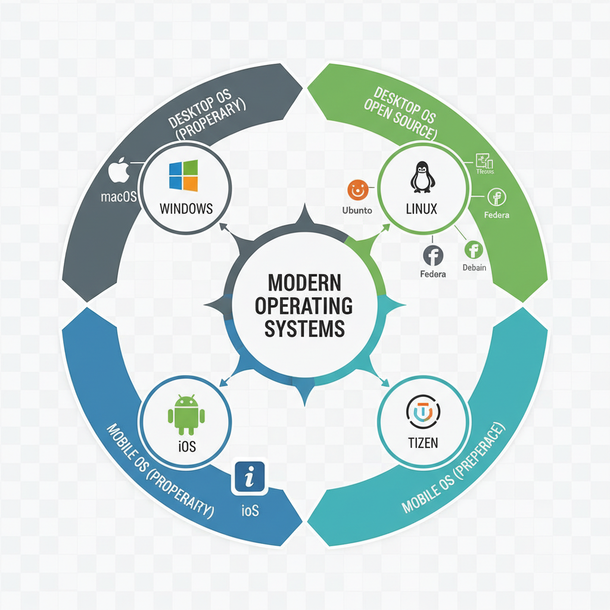
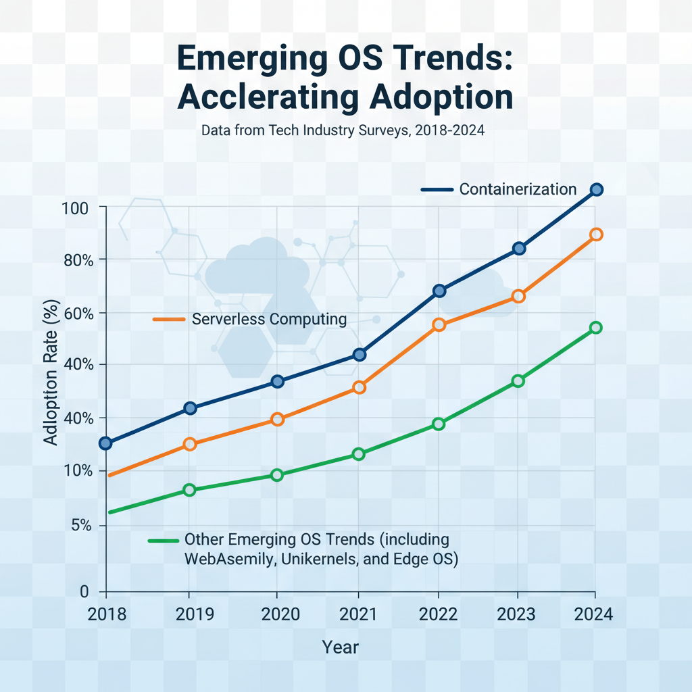

Operating System Landscape Around the World
Overview of Major Operating Systems

Visual representation of various OS categories
The operating system landscape around the world is diverse and complex, with various categories dominating different regions. Here's a summary of the major OS categories and their market share/user base:
- Unix: Primarily used in enterprise environments, Unix-based systems are popular among large corporations and governments due to their stability and security features. Examples include AIX, HP-UX, and Solaris.
- Windows: Widely used in consumer markets, Windows is the dominant OS for desktops and laptops worldwide. Its popularity can be attributed to its user-friendly interface and extensive software availability.
- Linux: With a strong community-driven development model, Linux has gained significant traction among developers and power users. It's commonly used in servers, supercomputers, and embedded systems.
According to Gartner's Top 10 Strategic Technology Trends for 2026, the operating system landscape is expected to shift towards more cloud-native and hybrid models. As the world becomes increasingly digital, it's essential to understand the existing OS ecosystem and its implications on software development.
While this overview provides a general snapshot of major OS categories, it's crucial to note that regional preferences and market dynamics play a significant role in shaping the operating system landscape.
Emerging OS Trends

Visual representation of the rise of new operating system technologies
As the operating system landscape continues to evolve, several trends are emerging that promise to shape the future of computing. One notable trend is the rise of cloud-native operating systems, which are designed from the ground up for cloud-based environments.
- Cloud-native operating systems offer improved scalability, flexibility, and reliability compared to traditional on-premises solutions.
- With the increasing adoption of containerization and serverless computing, cloud-native OSes are becoming more prevalent in modern applications.
- Gartner's Top 10 Strategic Technology Trends for 2026 list cloud-native OSes as a key trend, highlighting their potential to "transform how organizations build, deploy, and manage applications" (Gartner Top 10 Strategic Technology Trends for 2026).
Another trend gaining traction is the impact of edge computing on OS design. As IoT devices and edge computing continue to grow in importance, operating systems are being designed with edge computing in mind.
- Edge OSes must balance the need for low latency and high performance with the limitations of resource-constrained edge devices.
- This requires innovative solutions such as adaptive caching, optimized data processing, and improved power management.
- By addressing these challenges, edge OSes can unlock new use cases and applications that were previously impossible to achieve.
With the proliferation of cloud-native OSes and edge computing, the operating system landscape is becoming increasingly complex. As developers, it's essential to stay informed about emerging trends and technologies to build applications that take advantage of these developments.
Regional OS Preferences
Visual representation of regional operating system adoption patterns
The adoption and usage of operating systems vary significantly across different regions around the world. Understanding these regional differences is crucial for developers, policymakers, and businesses looking to expand their reach globally.
-
Asia: Linux has become a dominant force in Asia, particularly in countries such as China, India, and Japan. The popularity of Linux can be attributed to its flexibility, customizability, and affordability. Many Asian companies prefer Linux due to its ability to adapt to local hardware configurations and software requirements.
-
North America: Windows remains the preferred operating system in North America, particularly among consumers and businesses alike. The widespread use of Windows is largely driven by its compatibility with a wide range of software applications and hardware devices.
As we move forward, it's essential to consider the implications of these regional OS preferences on global development, innovation, and collaboration. According to Gartner's Top 10 Strategic Technology Trends for 2026, the increasing adoption of artificial intelligence and machine learning will likely influence OS choices in the future (Gartner Top 10 Strategic Technology Trends for 2026).
Security and Compliance Considerations
As the global operating system landscape continues to diversify, one critical aspect that cannot be overlooked is security and compliance. The choice of operating system can have far-reaching implications for an organization's overall security posture.
Secure Boot Mechanisms
Secure boot mechanisms play a vital role in ensuring the integrity of an operating system. By enforcing strict validation procedures during the boot process, these mechanisms prevent malicious software from gaining access to the system. This is particularly important in environments where sensitive data is processed or stored.
Regulatory Requirements
Regulatory requirements also significantly impact the choice of operating system. For instance, organizations operating in highly regulated industries such as healthcare and finance must adhere to stringent security standards. In such cases, the selection of an operating system that meets these requirements becomes crucial to avoid non-compliance.
Impact on OS Selection
The interplay between security and compliance considerations can be seen in the increasing adoption of Linux-based operating systems in enterprise environments. This trend is driven by Linux's strong reputation for security and its ability to meet the stringent requirements of various regulatory bodies.
While no single operating system can guarantee 100% security, a well-chosen OS can significantly reduce the risk of breaches and non-compliance. As stated by Gartner, "The increasing adoption of containerization and serverless computing will continue to drive demand for secure and compliant infrastructure" (Gartner Top 10 Strategic Technology Trends for 2026 | https://www.gartner.com/en/articles/top-technology-trends-2026).
By prioritizing security and compliance in the selection process, organizations can minimize the risk of data breaches and ensure a more secure computing environment.
Open-Source vs. Proprietary OS
As the world of technology continues to evolve, the choice between open-source and proprietary operating systems has become a crucial decision for developers and organizations alike.
Benefits of Open-Source Licensing
Open-source operating systems offer several benefits, including:
- Community-driven development: With open-source licenses, developers can contribute to the codebase, fix bugs, and add new features, ensuring that the OS stays up-to-date and secure.
- Customization and flexibility: Open-source OSes allow users to modify the source code to suit their specific needs, making them ideal for businesses with unique requirements.
- Cost-effectiveness: Since open-source OSes are free to use and distribute, they can be more cost-effective than proprietary alternatives.
Trade-offs of Proprietary Software
Proprietary operating systems, on the other hand, have some drawbacks:
- Limited control: Users have limited access to the source code, making it difficult to customize or modify the OS.
- Security concerns: Since the source code is not publicly available, vulnerabilities may go undetected for longer periods, compromising user security.
- Cost: Proprietary OSes often come with a licensing fee, which can be a significant expense for organizations.
The Gartner Top 10 Strategic Technology Trends for 2026 report highlights the growing importance of open-source software in the industry, stating that "open-source software will continue to gain traction as companies seek more agile and cost-effective ways to deliver IT services."
Future Outlook for Operating Systems
As we move forward, the operating system landscape is expected to undergo significant transformations driven by emerging technologies. Two areas that will have a profound impact on OS design are quantum computing and artificial intelligence.
Impact of Quantum Computing on OS Design
Quantum computing has the potential to revolutionize the way operating systems process information. With the ability to perform complex calculations exponentially faster than classical computers, quantum-powered OSes could enable new applications in fields like cryptography and optimization. However, this also raises concerns about the security implications of quantum-resistant algorithms and the need for OS updates that can mitigate these risks.
Role of Artificial Intelligence in OS Evolution
Artificial intelligence (AI) will play a crucial role in shaping the future of operating systems. AI-powered OSes could enable more personalized user experiences, predictive maintenance, and automated software updates. Additionally, AI-driven security solutions could help detect and respond to emerging threats more effectively.
While it's difficult to predict exactly how these technologies will shape the OS landscape, one thing is clear: the future of operating systems will be shaped by a combination of technological advancements and societal needs. As noted in Gartner's Top 10 Strategic Technology Trends for 2026, "Quantum computing and AI are expected to have a significant impact on the way businesses operate and interact with their customers."
Edge Cases and Failure Modes
As we explore the operating system landscape around the world, it's essential to identify potential edge cases and failure modes that can impact system stability and user experience. Here are a few examples:
- Linux Kernel Bug: A bug in the Linux kernel can have severe consequences, including system crashes, data corruption, and security vulnerabilities. For instance, a bug in the kernel's memory management system could lead to memory leaks or buffer overflows, compromising the integrity of sensitive data.
- Windows Update Impact on System Stability: Windows updates often introduce new features and improvements, but they can also cause system instability if not properly tested or rolled out. A sudden update can disrupt critical system services, leading to crashes, freezes, or even complete system failure.
Given the rapidly evolving nature of technology, it's crucial for developers to be aware of these edge cases and take proactive steps to mitigate potential risks. By understanding how operating systems respond to various scenarios, we can build more robust and reliable systems that meet the needs of users worldwide.
Debugging and Observability in the OS Landscape
As we explore the diverse operating system landscape around the world, it's essential to discuss the tools and techniques used for debugging and monitoring system performance. Effective debugging and observability are crucial for identifying issues before they impact end-users.
System Logs: A Troubleshooting Powerhouse
System logs can be a valuable resource for troubleshooting purposes. These logs contain records of system events, errors, and security incidents. By analyzing these logs, developers can identify patterns, anomalies, and potential causes of issues. To make the most out of system logs:
- Regularly review log files to detect unusual activity or errors.
- Implement log rotation and retention policies to ensure logs are not overwhelming or deleted prematurely.
- Utilize logging tools with built-in analysis capabilities to simplify troubleshooting.
Performance Monitoring Tools: A Key to Optimizing System Performance
Performance monitoring tools can help developers identify performance bottlenecks, optimize system resources, and ensure overall system health. Some benefits of using these tools include:
- Real-time visibility into system performance and resource utilization.
- Automated alerts for potential issues before they impact end-users.
- Data-driven insights to inform optimization decisions.
By leveraging system logs and performance monitoring tools, developers can improve the reliability, efficiency, and overall user experience of operating systems.